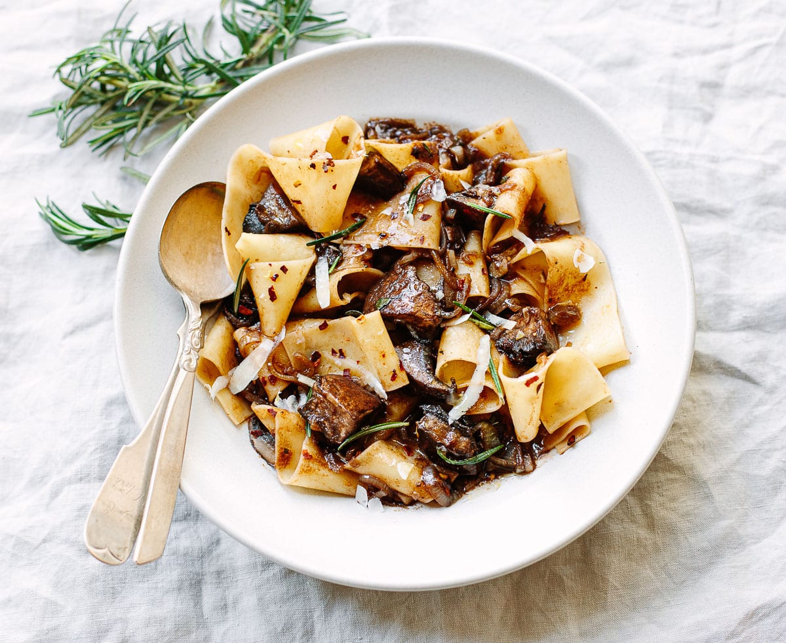

Pasta with Portobello Mushroom Ragu

Serves: 4
Time: 30 Mins (15 Prep/15 Cooking)
Ingrediants:
- 3 Tbsp Extra Virgin Olive Oil
- 2 Shallots, halved and sliced
- Kosher Salt
- 3 (350gr) Portobello Mushroom Caps, sliced into 1 inch pieces
- 225gr Pappardelle Paste
- 1 Garlic Glove
- 2 Tsp Rosemary Leaves, chopped
- 1/2 Tsp Red Chili Flakes
- 2 Tbsp Tomato Paste
- 1 Tsp Balsamic Vinegar
- 2 Tbsp Unsalted Butter
- Parmigiano or Parmesan Cheese
Instructions:
- Put the oil, shallots and a pinch of salt in a large skillet and place over medium heat. Cook, stirring frequently, until the shallots are softened, but not browned.
- Add the mushrooms to the pan. Cook the mushrooms for a few minutes until they take on some color, then stir and add 1/2 teaspoon salt. Continue cooking until the mushrooms become tender and their liquid evaporates.
- Meanwhile, bring a large pot of water to a boil and add 2 tablespoons kosher salt. Cook the pasta until al dente. Scoop out and reserve 1/2 cup of the pasta water, then drain the pasta.
- Add the garlic, rosemary, chili, tomato paste, vinegar and butter to the mushrooms. Add 1/3 cup of the pasta water and stir over medium heat until the mixture becomes saucy. Add the pasta to the pan and toss gently with tongs to coat with the sauce, adding more water if it seems too dry. Taste for seasoning.
- Shave curls of Parmigiano cheese over the pasta with a vegetable peeler and serve.